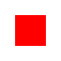
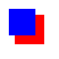

basic svg loaded with normal img tagsvg with symbol containing path, loaded with normal img tag (shows blank)svg with symbol containing path, loaded with xlinked svg tag, coloured with css

svg with symbol containing path but internally xlinked, normal image tag, coloured with internal svg use tagsvg with symbol containing path but internally xlinked, loaded with xlinked svg tag, coloured with css

svg with symbol containing multiple shapes internally xlinked, normal image tag, coloured with internal svg use tagsvg with symbol containing path but internally xlinked, loaded with xlinked svg tag, coloured with css